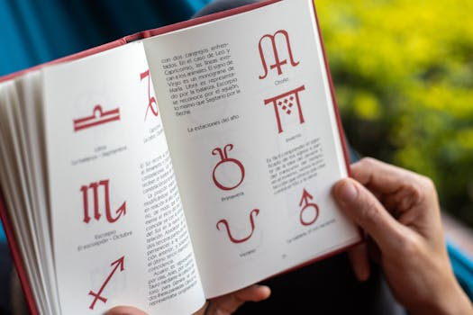

title: "Gemini Gems 完全攻略：5 個 AI 員工幫你每天省 3 小時" slug: gemini-gems-ai-employee date: 2026-03-07 author: 阿峰老師（黃敬峰） tags: [Gemini, Gems, AI工具, Google AI, AI辦公, 提示詞] description: "Gemini 的 Gems 功能讓你打造專屬 AI 員工團隊。本文用 5 個實戰案例 + 3 個進階技巧，教你培訓一次、終身受用，每天至少省下 3 小時。"
Gemini Gems 完全攻略：5 個 AI 員工幫你每天省 3 小時
你每天用 Gemini，但你有沒有注意到側邊欄有一個叫 Gems 的功能？
根據我在超過 400 家企業的培訓經驗，90% 的人從來沒打開過這個功能。他們每次都在重打提示詞、等回覆、不滿意再改，來來回回搞半天。明明一分鐘能搞定的事情，卻花了一個小時反覆溝通。
但真正的高手，早就把 Gems 當成專屬 AI 員工在用了。
什麼是 Gemini Gems？

Photo by Paoko on Pexels簡單說，Gems 就是你的「固定提示詞 + 知識庫 + 工具組合」的打包方案。你把角色設定、行為規則、參考資料都設定好，之後每次打開這個 Gem，它就自動進入角色，不需要你重新輸入任何東西。
培訓一次，終身受用。
Gems 的三大核心功能
1. Instructions 指令區 這是你放固定提示詞的地方。寫好之後，每次打開就自動進入角色。
2. 預設工具 你可以勾選 Deep Research（深度研究）、Canvas（畫布協作）、圖片生成、學習輔導等工具，讓 Gem 具備不同的能力。
3. Knowledge 知識庫 支援高達 100 萬 token 的超長上下文視窗，能一次吃掉 1,500 頁的文件，進行邏輯推理和深度分析。你可以把行業報告、公司制度、甚至一整本書都餵給它。
5 個實戰 AI 員工
 Photo by Tara Winstead on Pexels
Photo by Tara Winstead on Pexels
案例一：說人話文案大師
痛點：AI 寫出來的文案，人味太少、AI 味太重。
設定方法： 在指令區輸入一句話：「當我輸入主題、用途、字數，幫我寫沒有 AI 味的文案。如果判斷不了怎麼寫，先問我。」
然後點擊下方的魔法棒按鈕，AI 會自動幫你展開成包含角色設定、目標、行為規則的完整提示詞。
實測結果： - IG 文案：成品打 80 分，從痛點切入而非生硬介紹，稍微改幾句就能發布 - 週報：把流水帳升華成思考和感悟，一千字週報只花幾十秒
關鍵設定：「如果判斷不了怎麼寫，先問我」— 這個限定條件讓 AI 會先反問你配圖形式、語氣偏好等細節，大幅提升產出品質。
案例二：文件分析員
設定重點：兩個限定條件 1. 文件裡沒有的資訊，直接說「不包含」，不允許編造 2. 輸出時必須標注引用的是第幾頁，方便核對
實測結果： 一份 50 多頁的數位行銷報告，自動提取行業趨勢、關鍵數據。其中 YouTube 月活 27.5 億這個數據，回去翻原文第六頁核對，完全正確。
【獨家】Canvas 畫布協作 — 被低估的最強外掛
這是影片裡有提到但沒有深入展開的功能，我來補充說明。
Canvas 不只是一個預覽視窗，它是一個完整的 AI 協作編輯器。當你在 Gem 的預設工具裡勾選 Canvas 後，右側會彈出一個獨立編輯欄。
Canvas 的四大殺手級功能：
- 選中提問：選中任何一句話，直接對 AI 提問「這是什麼意思？」，即時獲得解答
- 長度縮放：選中文字後，一鍵調整長度，從最精簡到最詳盡
- 語氣調整：從非常隨意到嚴肅，一鍵切換整段文字的語氣
- 修改建議：AI 自動標注建議修改的地方，類似紅筆批注，點擊就能直接套用
改完之後可以直接匯出到 Google Doc，全流程無縫銜接。
我的建議：如果你的工作需要頻繁修改長文件（企劃案、報告、合約），Canvas 是必開的功能。它省去了在對話框裡一遍遍打字、再一段段複製貼上的麻煩。
案例三：數據整理員
進階技巧：不知道怎麼寫 Gem 指令？讓 AI 幫你寫。
把雜亂的表格直接丟給 Gemini，告訴它：「我想做一個專門整理表格的 Gem，指令要能通用到所有表格整理需求，幫我寫。」然後把它給你的回覆原樣複製到新 Gem 的指令框裡。
實測結果： - 雜亂表格瞬間變成日期統一、品類清晰的工整格式 - 貼 Google Sheets 連結就能自動整理並匯出，不需手動上傳下載 - 還能根據表格數據做深入分析，給出爆款選題建議
【獨家】為什麼 Gems + Google 生態是目前最強的組合？
ChatGPT 有 GPTs，Claude 有 Projects，但 Gems 有一個其他平台比不上的優勢：深度整合 Google 生態系。
- Google Docs：直接讀取、編輯、匯出
- Google Sheets：貼連結就能提取和整理數據
- Google Drive：直接匯入雲端文件作為知識庫
- NotebookLM：關聯進行知識庫搜索和搭建
如果你的公司已經在用 Google Workspace，Gems 幾乎是零學習成本就能上手。這也是為什麼我在企業培訓時，特別推薦 Google 生態系的企業優先嘗試 Gems。
案例四：高情商溝通助理
痛點：有些人你不想得罪又不敢得罪，但要求特別多。可能是客戶、老闆，或需要配合的同事。
指令設定： - 當對方提出過分要求或反覆修改時，用專業婉轉的語氣回覆 - 幫我設定邊界 - 工作量太大時，幫我談追加預算，而不是直接答應 - 重點是維護好客戶關係
關鍵調整： 第一版回覆太像機器人？加一句：「我希望直接複製你的話發給客戶，所以需要更口語化、有人味。」
調整後的回覆既保持專業態度，又用溫和語氣提出重新評估工作量的條件。
案例五：最強學習助手
設定核心：費曼學習法人格。
費曼學習法的核心是「用輸出倒逼輸入」— 透過向別人解釋概念來檢驗自己是否真的懂了。
實測體驗： 問它「複利在生活中怎麼運用」，它不會甩一堆公式，而是像引導小孩一樣提問：「請你用十歲小孩也聽得懂的話，講講你對複利的理解。」
當你回答後，它會繼續引導你舉生活中的例子、關聯實際情境。你不再是被動接收資訊，而是被一個強大的老師引導著一步步輸出知識。
【獨家】費曼學習法 Gem 的進階用法
在企業培訓中，我發現這個 Gem 還有三個意想不到的用途：
- 新人培訓：讓新進員工用這個 Gem 複習公司的產品知識，透過解釋來加深理解
- 會議準備：開會前把議題丟給 Gem，讓它用費曼法幫你梳理論點
- 跨部門溝通：技術人員想跟非技術主管解釋複雜概念時，先用這個 Gem 練習簡化表達
三個讓 Gems 更精準好用的技巧
 Photo by Markus Winkler on Pexels
Photo by Markus Winkler on Pexels
技巧一：給正確答案當參考
比如你要 Gem 寫爆款開頭，除了描述風格，最好直接貼幾段範例在指令裡，告訴它「仿照這個邏輯和語氣來」。有了參考，產出品質會大幅提升。
技巧二：先問後做
在指令加上：「如果我的需求描述不夠具體，請先確認，不要直接生成。」
這個設定能幫你過濾掉九成的廢稿。讓 AI 主動跟你對話、確認細節，比你自己想破頭寫完美提示詞更有效率。
技巧三：專事專辦
不要試圖做一個能解決所有問題的萬能 Gem。高效的做法是：
- 寫文案 → 文案 Gem
- 分析數據 → 數據 Gem
- 爆款標題 → 標題 Gem
每個工作專人專辦，就像你不會讓財務去跑業務一樣。
結語
Gems 不是什麼高深的技術，它就是幫你把「每次都要重來的溝通」變成「一勞永逸的設定」。
我常說：你是機長，AI 是機組人員。 但一個好機長不是每次飛行都重新訓練機組，而是建立標準流程，讓每個人各司其職。
Gems 就是你建立 AI 工作流程的最佳工具。
阿峰老師（黃敬峰）｜企業 AI 實戰培訓專家 400+ 企業合作、10,000+ 學員 會用、懂用、好用、每天用
官網：https://www.autolab.cloud 部落格：https://blog.autolab.cloud
Meta Title: Gemini Gems 完全攻略：5 個 AI 員工幫你每天省 3 小時｜阿峰老師 Meta Description: Gemini Gems 功能教學，用 5 個實戰案例打造專屬 AI 員工：說人話文案、文件分析、數據整理、高情商溝通、學習助手。含 3 個進階技巧，培訓一次終身受用。 Tags: Gemini, Gems, AI員工, AI工具, Google AI, AI辦公, 提示詞, Canvas, 費曼學習法 Keywords: Gemini Gems 教學, Gemini Gems 怎麼用, AI 員工, Gems 設定, Google AI 工具, AI 文案助手, AI 辦公自動化, Gemini 進階功能